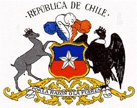

Chile
 |
 |
Información general
Nombre oficial: República de Chile
Área: 736 902,9 km²
Costas: 6435 km
División política: 12 regiones, la Región Metropolitana de Santiago y 51 provincias
Regiones Capitales
- Tarapacá Iquique
- Antofagasta Antofagasta
- Atacama Copiapó
- Coquimbo La Serena
- Valparaíso Valparaíso
- R. Metrópolitana de Santiago Santiago
- Libertador Gral.Bernardo O'Higgins Rancagua
- Maule Talca
- Biobío Concepción
- La Araucanía Temuco
- Los Lagos Puerto Montt
- Aisén del Gral.Carlos Ibáñez Coihaique
- Magallanes y de la Antártida Chilena Punta Arenas
Unidad monetaria: Peso
1 Peso = 100 centavos
Idiomas: Castellano o español (oficial); mapuche, quechua, aimará (no oficiales); algunas comunidades de origen extranjero hablan también alemán, inglés y francés
Fiesta nacional: 18 de septiembre, Independencia Nacional
Gentilicio: Chileno
Hora oficial:GMT -4 horas (normal); GMT -3 horas (verano)
Miembro de: ONU, OEA, ALADI
Curiosidades
Chile ocupa una estrecha faja (anchura máxima 445 Km, mínima 90 Km) que se extiende por el extremo sudoccidental de América del Sur y posee además numerosas islas, entre ellas la Isla Grande de Tierra del Fuego que comparte con Argentina, Diego Ramírez, Sala y Gómez, Pascua y los archipiélagos de Juan Fernández y los Chonos. Chile esta situado en un área de inestabilidad geológica en que ocurren grandes terremotos.
El desierto de Atacama es el lugar más seco de la tierra (menos de 0,1 mm de precipitación promedio al año). Por su superficie (180 000 Km²)es el segundo desierto del continente y uno de los 20 más extensos del mundo. Su subsuelo es rico en minerales, especialmente nitratos y cobre.
Información adicional en Internet.
Perfil Ecónomico
Perfil Demográfico
Población: 15.116.435 hab.
Densidad de población: 20 hab/km²
Fuente INE Censo 2002 http://www.ine.cl/cd2002/sintesiscensal.pdf
Perfil Cultural
Alfabetismo: 96 %
Religión:
- Católicos: 70 %
- Protestantes (Incluidos los evangélicos): 15,1%
- No religiosos: 8,3%
- Otros: 4,3%
Algunas figuras notables:
- Nemesio Antúnez (1918-1993). Pintor y grabador
- Claudio Arrau (1903-1991). Pianista
- Alberto Blest Gana (1830-1920). Novelista
- Vicente Huidobro (1893-1948). Poeta y escritor
- Roberto Matta (1912). Pintor
- Gabriela Mistral (1889-1957) (Lucila Godoy). Poetisa Premio Nobel de Literatura 1945
- Pablo Neruda (1904-1973). Poeta. Premio Nobel de Literatura 1971
- Benjamin Vicuña Mackenna (1831-1886). Historiador y periodista
Lugares declarados patrimonio mundial por la UNESCO
- Parque Nacional de Rapa Nui, Isla de Pascua.
Sistema de Gobierno
Constitución vigente: 1981 (Última modificación 2005)
Sistema ejecutivo: Presidente (elegido directamente para un período de cuatro años, no reelegible para un período inmediato).
Sistema legislativo: Senado (cuarenta y siete miembros: ocho de ellos designados, dieciocho renovables cada cuatro años y los restantes, incluidos los designados, cada ocho años). Cámara de Diputados (120 miembros, electos cada cuatro años).
Sistema judicial: Corte Suprema de Justicia (diecisiete magistrados), diecisiete cortes de apelaciones y juzgados.
Gobierno subdivisional: Cada una de las doce regiones está encabezada por un Intendente; las cincuenta y una provincias tienen Gobernadores propios, elegidos por votación directa. Hay además, más de 300 municipios encabezados por Alcaldes.
Aproximación histórica
Chile se extiende entre la cordillera de los Andes y el Océano Pacífico, a lo largo de 4 300 Km y ningún punto del territorio sobrepasa la anchura de 445 km. Colinda con Perú y Bolivia por el Norte, con Argentina por el este y con el Polo Sur en su extremo meridional. Miles de islas e islotes dan a la costa meridional chilena la apariencia de un inmenso encaje. También pertenecen a Chile algunas islas alejadas en el Pacífico, entre las que se encuentra la Isla de Pascua, notable por el misterio de sus monumentos de piedra y otros vestigios de una cultura polinésica desconocida.
Fernando de Magallanes descubre las tierras chilenas en 1520. La lucha por la independencia se inicia en 1811, dirigida por Bernardo O´Higgins y apoyada por el argentino José de San Martín. Los españoles son derrotados en la batalla de Maipú en 1816 y el país obtiene su independencia.
En su relieve se presentan tres formaciones diversas: la cordillera de los Andes, con una veintena de picos, la cordillera de la costa, cuya altitud promedio no sobrepasa los 2 000 metros y la depresión intermedia, árida en el norte, con pampas desérticas y salinas como en el desierto de Atacama.
Los principales productos agrícolas de Chile son frutas, legumbres y madera. En la minería se explotan el cobre, oro, plata, salitre, molibdeno y yodo. Chile cuenta con industria maderera, papel, textil, química y del caucho.
«-- ir al comienzo
«-- regresar